Habilitando pagos PIX en una billetera digital
Diseñando un flujo confiable y sin fricciones para pagos internacionales con QR en Brasil—desde la hipótesis hasta el impacto medible.
Contexto
¿Qué es PIX?
PIX es el sistema de pagos instantáneos de Brasil, lanzado por el Banco Central en 2020. Permite transferencias instantáneas 24/7 usando códigos QR, números de teléfono o claves de cuenta.
Para 2024, PIX se había convertido en el método de pago dominante en Brasil, procesando más de 3 mil millones de transacciones mensuales y representando una integración crítica para cualquier billetera digital operando en el mercado.
Por qué es relevante
Objetivo del proyecto
Habilitar a los usuarios para realizar pagos PIX desde el saldo de su billetera digital, creando una experiencia rápida y confiable que reduzca la fricción en transacciones transfronterizas y aumente el engagement de la billetera para el mercado brasileño.
Problema a resolver
Los flujos de pago internacionales involucran múltiples puntos de fricción: conversión de moneda, comisiones poco claras, largos tiempos de espera y barreras de confianza. Para usuarios no familiarizados con PIX, estas preocupaciones se amplifican.
Brecha de confianza
Mostramos comisión antes de confirmar y emitimos comprobante inmediato con ID PIX para trazabilidad.
Principalidad:
Pagá en Brasil por QR, en segundos y 24×7: escaneás, confirmás y el comercio recibe en BRL; conversión automática desde tu saldo en ARS.
Estrategia y escala
El patrón QR se reutiliza para Paraguay, acelera el time-to-market y empuja TPV en viajes y cross-border.
Qué estaba en juego
Más allá de la frustración del usuario, los flujos de pago poco claros impactan directamente en:
- •Tasas de conversión — los usuarios abandonan antes de completar la primera transacción
- •Volumen de soporte — tickets de "¿dónde está mi dinero?" aumentan los costos operativos
- •Retención — una experiencia negativa inicial previene el uso repetido
Rol y Responsabilidades
Lidero el equipo de Cash Management con un enfoque estratégico, trabajando en estrecha colaboración con el liderazgo técnico para impulsar la visión de producto y su ejecución. Mi rol conecta estrategia y entrega —desde la ejecución del roadmap hasta la coordinación cross-functional con compliance y el Banco Central de Brasil— asegurando que nuestras iniciativas se alineen con los objetivos del negocio mientras mantenemos la excelencia operativa y regulatoria.
Liderazgo de Equipos
Experiencia liderando tribus y equipos multidisciplinarios incluyendo producto, diseñadores y especialistas UX. Ownership end-to-end del diseño desde research hasta implementación final.
Ejecución Estratégica
Impulso la ejecución del roadmap, gestiono dependencias entre equipos, desbloqueo iniciativas y coordino esfuerzos en toda la organización de Payments.
Cumplimiento normativo
Aseguro el cumplimiento regulatorio antes del lanzamiento, en coordinación con equipos de compliance y con el Banco Central de Brasil.
Adopción post-lanzamiento
Aseguro la claridad de comunicación y los canales de soporte necesarios para una adopción temprana confiable y sin fricción innecesaria.
Ownership de diseño
- •Definir el flujo de pago end-to-end y los puntos de decisión críticos
- •Diseño de estados de error y paths de recuperación para minimizar abandono
- •Copy y microinteracciones orientadas a construir confianza en momentos de alta fricción
- •Experiencias de recibo y confirmación para incrementar confianza
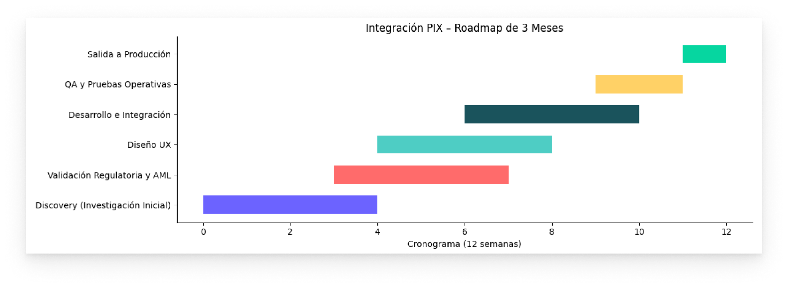
Hipótesis y supuestos
Si proporcionamos feedback claro e inmediato en cada paso—especialmente sobre timing, montos y confirmación—los usuarios confiarán lo suficiente en el flujo para completar su primera transacción y regresar para pagos subsecuentes.
Supuestos clave
Los usuarios esperan confirmación instantánea. Cualquier demora crea dudas e inquiries de soporte.
En flujos financieros, los usuarios prefieren explicaciones explícitas sobre copy minimalista.
Los pagos fallidos necesitan guía inmediata y accionable para prevenir abandono.
La prueba visual de la transacción incrementa la confianza y reduce la ansiedad.
Qué priorizamos
Debido a las limitaciones de tiempo, recursos y requisitos regulatorios, nos enfocamos en:
- 1.Simplificar el flujo de escaneo QR → confirmación para minimizar pasos
- 2.Mostrar confirmacion del pago (monto, destinatario, comisiones) para verificar los datos
- 3.Diseñar estados claros de éxito/error
Arquitectura del Flujo
Divergir para entender. Converger para ejecutar.
La experiencia del usuario debía ser simple. Internamente, el sistema contemplaba múltiples validaciones, estados intermedios y decisiones dependientes de respuestas externas. Primero exploramos distintas alternativas y riesgos del flujo; luego convergimos en un MVP claro, reutilizando el sistema de diseño para cumplir con el deadline sin comprometer la experiencia.
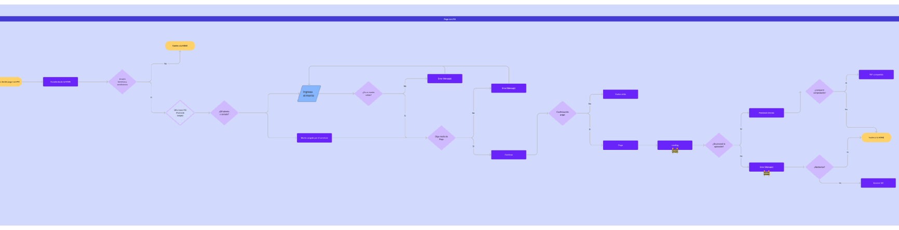
Reutilización estratégica del Design System
Construir el flujo 100% sobre componentes existentes fue una decisión estratégica deliberada: evitar la creación de patrones nuevos para priorizar consistencia, velocidad y alineación con el deadline.
- ⚙️ Construir el flujo 100% sobre componentes existentes
- ⚙️ Evitar creación de patrones nuevos
- ⚙️ Priorizar consistencia y velocidad
- 🚀 Componentes previamente testeados
- 🚀 Reducción de validaciones adicionales
- 🚀 Menor retrabajo con desarrollo
- 🚀 Aceleración del time-to-market
- 🛡 Familiaridad para el usuario
- 🛡 Consistencia visual
- 🛡 Reducción de fricción
Componentes reutilizados
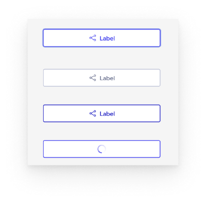
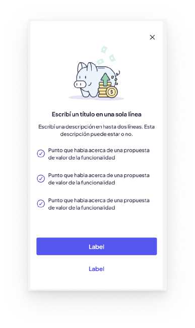
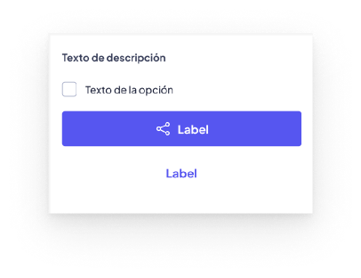
Definición del MVP
Alcance priorizado para garantizar una salida en tiempo y una experiencia confiable. Incluimos lo estrictamente necesario para garantizar una transacción clara, segura y alineada a normativa.
Qué incluimos en el MVP
- 1
Selección clara de PIX como método de pago
- 2
Generación de orden con conversión automática ARS → BRL
- 3
Estados de confirmación claros: pendiente, éxito, error
- 4
Mensajes claros en validaciones y errores accionables
Exploración y decisiones de diseño
Estados de error y recuperación
- Saldo insuficiente: monto exacto faltante + acción "Agregar fondos" —34% de abandono
- QR vencido/inválido: mensaje claro + "Escanear de nuevo" —89% completó el pago en el reintento
- Errores de red/timeout: fondos seguros + ID de tracking —56% menos tickets de soporte
Confirmación de los pagos
Recibos descargables con ID de transacción y confirmación del destinatario, para dar tranquilidad inmediata y referencia futura.
62% de los usuarios descargó su primer recibo, bajando a 23% en transacciones subsecuentes—el recibo construye confianza inicial pero se vuelve menos crítico con el tiempo.
Estados críticos del sistema
En un flujo asincrónico con dependencia externa, la incertidumbre es el mayor riesgo para el usuario. Diseñamos cada estado del sistema con copy específico y acciones claras para reducir ansiedad, evitar abandono y guiar al usuario hacia la resolución.
Decisión estratégica
- Priorizamos claridad sobre sofisticación visual
- Definimos acciones explícitas en cada estado
- Evitamos estados ambiguos o sin salida clara
Enfoque en lenguaje
- Iteramos microcopys con apoyo de IA para evaluar claridad y tono
- Priorizamos mensajes accionables y específicos en cada estado
La confirmación de pago fue el estado más crítico a diseñar: el usuario ya operó, pero el sistema aún no confirmó. Esa breve ventana de espera es donde más se pierde la confianza si no hay feedback claro.
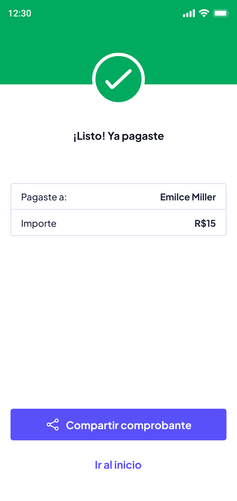
Copy: "¡Listo! Ya pagaste" - Confirmación clara con detalles del pago y opción de compartir comprobante
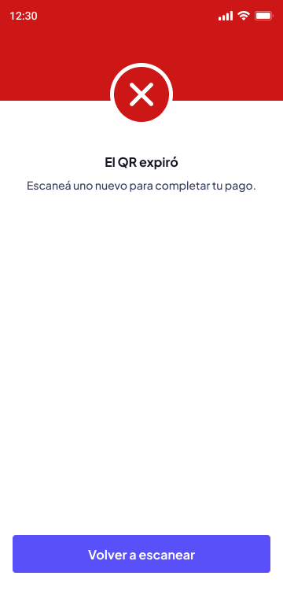
Copy: "El QR expiró" - Error específico con instrucción clara y botón de acción directa para reintentar
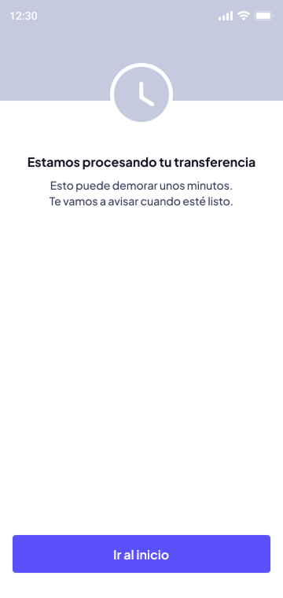
Copy: "Estamos procesando tu transferencia" - Estado actual con expectativa de tiempo y tranquilidad
Estrategia de microcopy
- • Usar lenguaje específico y accionable
- • Establecer expectativas claras de tiempo
- • Proporcionar siguiente paso inmediato
- • Mostrar IDs de transacción para tracking
- • Copy genérico sin contexto ("Error")
- • Tiempos vagos ("Pronto", "En breve")
- • Estados sin acción clara
- • Jerga técnica o códigos de error
Flujo de pago
El flujo final prioriza transparencia y velocidad mientras mantiene compliance regulatorio. Cada paso muestra información crítica en el momento correcto.
Escanear código QR
Paso 1El usuario abre la cámara y escanea el código QR de PIX. La validación online verifica si el código es válido antes de proceder al siguiente paso.
- • Feedback inmediato de validación (QR inválido = error instantáneo)
Conversión automática
Paso 2Todos los detalles de la conversion mostrados en una sola pantalla
- • Primaria: Monto (grande, bold)
- • Secundaria: Nombre del destinatario y número de cuenta parcial
- • Terciaria: Tasa de conversión y desglose de comisiones (expandible)
Confirmar pago
Paso 3nombre/cuenta del destinatario, Detalles del pago: monto en BRL y moneda del usuario, tasa de conversión y todas las comisiones.
- • Éxito: Check verde + "Datos del usuario y monto enviado" +
- • Procesando: Estado de carga
- • Error: Tipo de error específico + acción de recuperación
Recibo y confirmación
CompletoPantalla de éxito con resumen de transacción, recibo descargable y opción para volver a la billetera o hacer otro pago.
- • ID de transacción para tracking
- • Confirmación de completitud
- • Opción de compartir o descargar recibo
Momentos críticos en el flujo
A lo largo del flujo, optimizamos para tres momentos de alta ansiedad:
Mostrar todos los costos por adelantado—sin sorpresas después del compromiso
Establecer expectativas claras de tiempo para reducir incertidumbre
Proporcionar prueba tangible (recibo) para construir confianza
Diseño visual del flujo
Visualización del flujo completo desde el escaneo inicial hasta la confirmación final del pago.
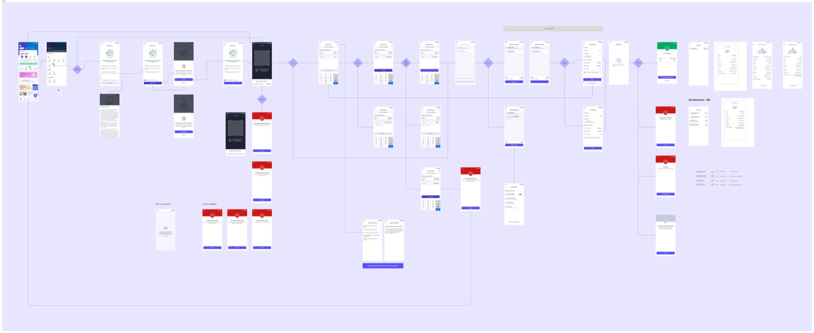
Mapeo del flujo de usuario completo mostrando puntos de decisión críticos
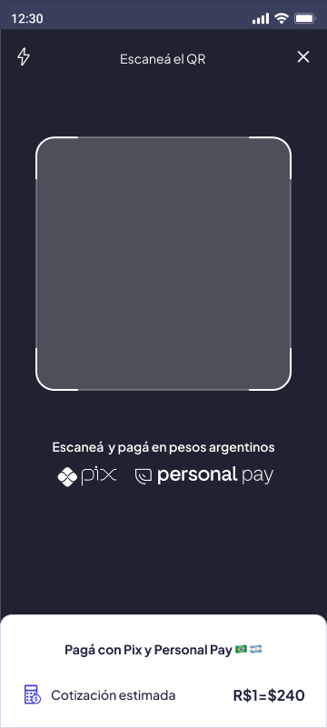
Validación en tiempo real del código con cotización estimada
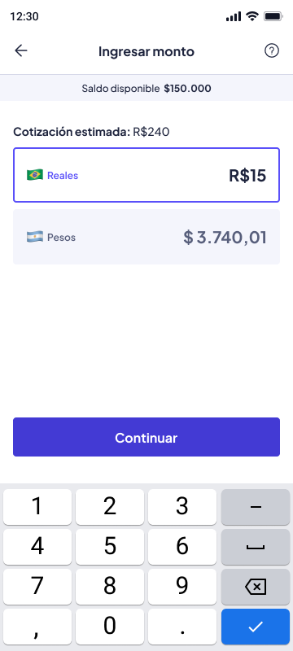
Ingreso de monto con conversión automática ARS→BRL
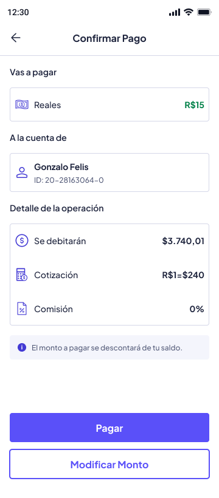
Revisión final con desglose completo de comisiones
Impacto y métricas
Iteraciones
Los errores percibidos en el escaneo estaban causados por condiciones de red, no por la cámara ni el QR.
Las personas que se contactaban con el soporte eran para consultar por el tipo de cambio y funcionamientoo
Impacto en el negocio
Las transacciones PIX generaron en ingresos por comisiones en el primer mes, superando las proyecciones iniciales en 45%.
Los usuarios que completaron un pago PIX mostraron 3.2x mayor uso general de la billetera comparado con usuarios no-PIX.
Aprendizajes
Qué funcionó bien
- •Divulgación progresiva de complejidad
Mostrar info esencial primero, con desgloses de comisiones y detalles de conversión expandibles, mantuvo el flujo simple sin ocultar información importante. Los usuarios apreciaron la opción de profundizar cuando lo necesitaban.
- •Establecer expectativas de tiempo
Ser explícito sobre "segundos, no minutos" ayudó a manejar la ansiedad durante la breve ventana de procesamiento. Los usuarios sabían qué esperar.
Qué ajustamos post-lanzamiento
- •Fallas por latencia en redes locales
Detectamos un 2% de fallas causadas por latencia en redes locales de Brasil, no por errores del usuario ni del QR. Ajustamos los tiempos de espera y mejoramos el ancho de banda para absorber esas intermitencias.
- •Timing de transparencia de comisiones
Originalmente mostramos las comisiones en la pantalla de confirmación final. Las movimos al paso de revisión después de que los usuarios expresaron sorpresa. Pequeño cambio, gran impacto en confianza.
Cómo evolucionó el producto
- •Rediseño del onboarding
Con los datos del primer mes, rediseñamos el onboarding para mejorar la adopción temprana y reducir la curva de aprendizaje en el primer uso de PIX.
- •Extensión a Llave PIX
El éxito del MVP habilitó la extensión del flujo a Llave PIX, ampliando las formas en que los usuarios pueden iniciar una transacción más allá del escaneo de QR.
Iteraciones post-lanzamiento
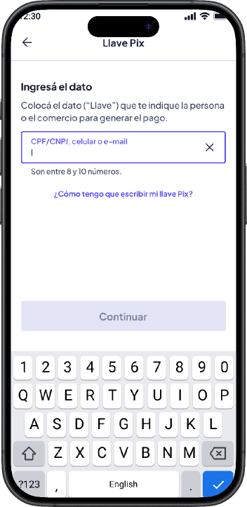
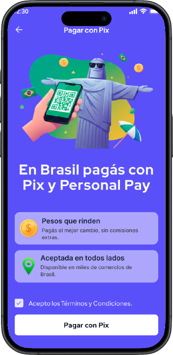
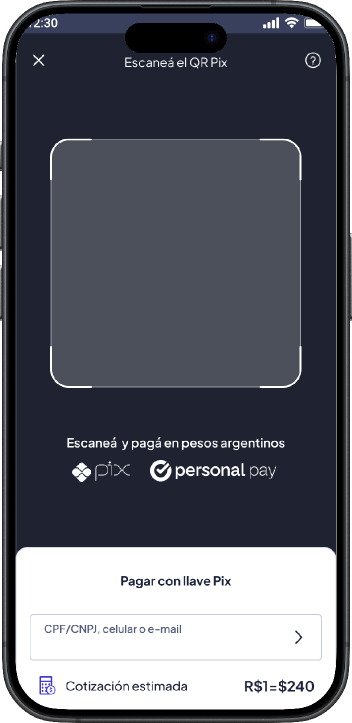
Próximos pasos y evolución
Mejoras planificadas
Sugerencias inteligentes de monto
Para pagos de remesas (servicios, etc.), pre-llenar montos exactos desde el input para eliminar entrada manual y reducir errores.
Historial de pagos e insights
Mostrar patrones de gasto y categorización para pagos PIX para ayudar a los usuarios a trackear a dónde va el dinero, aumentando el uso de la billetera.
Consideraciones de escalabilidad
A medida que crece la adopción de PIX, el sistema de diseño necesita evolucionar para soportar:
- •Expansión multi-moneda: Adaptar el flujo para otros sistemas de pago instantáneo (LATAM) con rediseño mínimo
- •Mayores volúmenes de transacciones: Optimizar performance y manejo de errores a medida que las transacciones diarias escalen de miles a cientos de miles
- •Agregar otras opciones de pago: Se esta trabajando en la integracion de llave Pix